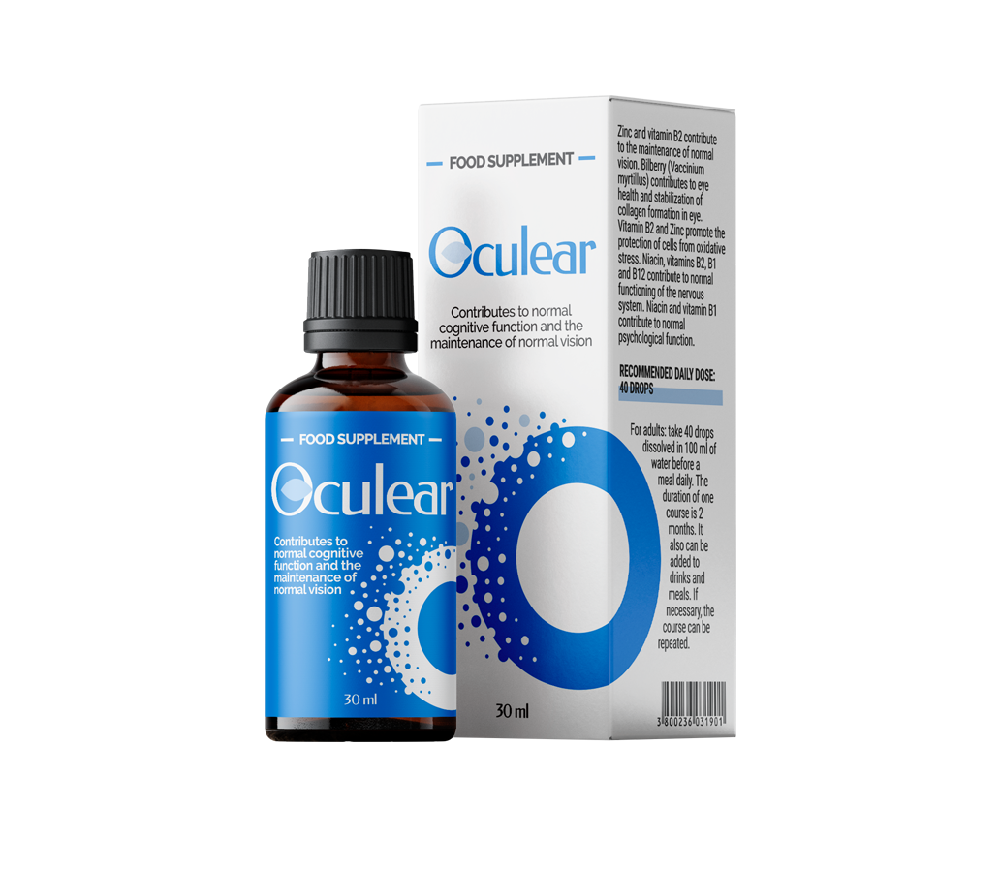

Un optométriste m'a sauvé la vie
Retour de la vision pour 1 cours sans chirurgie et visites chez le médecin
Aujourd'hui, je vais vous dire mon expérience de la correction de la vision. Les données initiales étaient les suivantes: œil gauche -5, œil droit -4. Maintenant, j'ai une vision à 100%, j'ai dû aller à un tel bonheur d'un chemin très long et sinueux. Cette histoire aidera à réduire le chemin de la vision de l'aigle à 1 mois.

Ma vision a commencé à se détériorer dans mon enfance. J'ai passé une grande partie de ma vie à plisser les yeux, à m'excuser, à dire bonjour à des étrangers par erreur et à ressentir une irritation constante sur la peau à cause de ma putain de cécité.
À 22 ans, il a commencé à porter des lentilles. Le montant d'argent dépensé pour les lentilles d'une journée suffirait à une nouvelle voiture premium. À 30 ans, je n'avais ni voiture ni vision normale. La réflexion sur ce sujet m'a amené à prendre des mesures extrêmes. A décidé de la correction chirurgicale de la vision.
Comment se déroule l'opération
Avant l'opération, on m'a interdit de porter des lentilles pendant un mois, pour lequel j'ai réussi à rassembler quelques poteaux et à manger 10 fois le mauvais bus. Ensuite, il y a eu deux consultations, dont l'une a vérifié la vision de toutes les manières possibles, et l'autre a décidé de la méthode de correction de la vision.
J'ai été approché par l'une des méthodes les plus avancées de correction de la vision, je ne me souviens pas de son nom, mais cela a inspiré la confiance.

La veille de l'opération, on a dit d'acheter trois types de gouttes pour les yeux, de prendre des vêtements de rechange et des lunettes de soleil. Et assurez-vous d'attraper un accompagnateur, que je n'ai certainement pas pris.
Je suis venu à la clinique à 9 heures du matin. Je me suis habillé en tablier, j'ai mis un chapeau, des couvre-chaussures et j'ai enterré l'anesthésie dans mes yeux. Après 20 minutes, ils ont conduit à la salle d'opération, les ont mis sur la table et ont dit de regarder le point vert. J'ai commencé à couper quelque chose dans l'œil et la vision est devenue brusquement floue, puis le même sort attendait l'autre œil.

Après l'opération, la turbidité a lentement passé. Le médecin m'a examiné et a mis des gouttes dans les yeux. Je n'ai ressenti aucune douleur, sauf que les larmes coulaient dans la rivière, qui ne pouvaient être essuyées que du menton. Le médecin m'a laissé rentrer chez moi, que j'ai atteint quelques heures au lieu des 30 minutes habituelles, dans les yeux tout flottait à bout de bras.
Quand je suis rentré à la maison, je me suis assis affamé jusqu'au soir et j'ai essuyé les larmes qui ne s'arrêtaient pas. Peu à peu, j'ai commencé à voir, le soir, je pouvais même voir le temps sur l'horloge, mais apparemment, l'anesthésie a cessé d'agir et de terribles douleurs ont commencé. Cette douleur a donné à la mâchoire, la tête s'est fendue toute la journée.
Peu de temps la musique a joué
Voici deux semaines plus tard, quand la douleur est passée, la vision est devenue vraiment bonne. Pour ne pas dire que tout est devenu super clair, mais parfois mieux qu'avant l'opération. Tout ne serait rien, mais les yeux étaient très fatigués le soir, tout commençait à s'estomper. Au moins, je pensais alors, mais après 5 mois, la vision a commencé à chuter rapidement. À un moment donné a commencé à voir si:

Encore une fois, j'ai couru à la pharmacie, acheté des lentilles pour naviguer dans l'espace. La vérité en les portant n'a rien vu. J'ai paniqué, puis j'ai été déprimé pendant deux jours.
C'était tellement mauvais qu'il était déjà nauséeux, j'ai décidé de ne pas laisser l'affaire et j'ai grimpé sur le forum. Même un peu plus facile d'avoir trouvé des compagnons de malheur. Il s'est avéré que je n'étais pas seul après l'opération. Assis près de l'écran, il a lu les histoires de différentes personnes pendant deux jours, essayant de trouver au moins une piste.

Un remède efficace abordable
Puis a commencé à étudier les articles. Ils ont déclaré que la perte de vision après la chirurgie est un phénomène normal, car la cause première de la perte de vision reste intacte. J'ai commencé à creuser plus loin et j'ai appris que tout était une question de vitamines et de substances, à cause du manque de vision qui commence à tomber. Ci-dessous, une liste des meilleurs médicaments a été proposée, selon la description et les critiques, j'ai été accroché . Passé la commande sur le site officiel, après quelques jours, le courrier a apporté le colis.
Après avoir étudié les instructions, après avoir lu la composition, qui était 100% naturel, a commencé à prendre . Le troisième jour, j'ai sauté de joie de mon pantalon, ma vision s'est nettement améliorée. Chaque jour, trois ou quatre ont remarqué des améliorations.
Trois semaines plus tard, il lisait calmement les panneaux de l'autre côté de la route, observait les oiseaux dans le ciel et avalait les livres la nuit. Les yeux ne se fatiguaient pas, il n'y avait pas de turbidité. J'ai été déchiré de joie, vous ne pouvez même pas imaginer quel bonheur de voir sans lentilles, de voir le numéro de votre bus et de ne plus avoir à compter les pièces de monnaie dans le magasin.
Après le cours sur les émotions est allé vérifier la vision à la clinique. J'ai été très surpris de voir la ligne inférieure des lettres comme si je l'avais portée au nez. Le médecin a rendu un verdict: vision 100%, avec les yeux, il n'y a pas de problèmes.
Résultat
J'ai passé un an à boire un cours , la vue est toujours telle qu'un tireur d'élite dans les troupes d'élite enviera. Pourquoi ai-je décidé d'écrire une histoire? Le fait est que j'ai décidé de re-suivre le cours, juste au cas où, je suis allé à une pharmacie, une autre, une troisième, et là, cet outil n'est pas vendu! Cela m'a provoqué une émotion tumultueuse. Je veux que tous ceux qui ont une vision en déclin prennent le cours. Je vais laisser un lien vers le site pour que vous ne tombiez pas sur un faux.
Commentaires ( 12 )
Ce n'est pas la première fois que j'entends dire qu'après l'opération, la vision peut tomber à nouveau. Mon ami a fait une correction il y a deux ans, la vision a été restaurée, et maintenant il voit mal à nouveau
Merci! Enfin, le remède a été trouvé, j'étais fatigué de marcher avec des lunettes 24 heures sur 24, mes yeux me font mal le soir et sont transférés. Commandé, en attente pour le colis
Je porte des lentilles depuis 6 ans et je n'espérais pas pouvoir voir un jour sans elles avant de connaître . En 4 semaines de -6 à -2 est arrivé, les sentiments de joie ne sont pas transmis!:)
En passant, je n'ai jamais porté de lunettes, et quand j'ai mesuré les autres pendant une minute, je l'ai enlevé et il m'a semblé que je suis généralement aveugle et que je ne vois rien. Je ne veux rien m'accrocher, alors j'ai commandé
Porté pendant sept ans, la dystrophie rétinienne a commencé à cause du manque d'oxygène. Le médecin a immédiatement prescrit , après quoi la vision est devenue presque 100%
Et en général, ma vision a constamment sauté, puis -2.5, puis-4 .Ni les lunettes ni les lentilles ne pouvaient constamment porter. Je suis étudiant, il n'y avait pas d'argent pour l'opération. J'ai dû chercher une alternative efficace et conseillée par un médecin familier. En un mois et demi, la vision est complètement rétablie
J'ai commandé , je bois la deuxième semaine et la vision s'est améliorée. Pas d'effets secondaires, les yeux ne se fatiguent pas, heureux comme un éléphant
J'avais une vision de moins 9. Dix ans de lentilles: le résultat - la conjonctivite la plus forte, la blépharite démodécie et une autre merde avec la rétine. Bien que je sois soignée, j'ai toujours pris de bonnes lentilles. Mon dernier ophtalmologiste a recommandé . Après avoir bu un seul cours, la vision a été restaurée à moins 1, je l'ai répétée. Le remède est très satisfait:)
J'ai -14,5 et 15,5... depuis la naissance! Je pensais que je ne serais plus pire, mais il s'est avéré que c'était peut - être pire-dans 22, la vision est tombée à -17,5 et -18. Il y a deux mois, j'ai commencé à prendre , pendant ce temps, la vision est devenue -4,5 et 5! Si ce n'était pas pour cet outil, je ne sais pas ce que je faisais. Je continue à boire le remède
J'avais -5. J'ai traité plusieurs fois et aidé, mais après un certain temps, je me suis assis de toute façon. La dernière chose que j'ai restaurée est . Après lui, ma vision est devenue 100%. Presque six mois ont passé et tout va bien
J'ai une vision de -5. J'ai 32 ans. J'ai très peur que ça continue de tomber. Je vais sans lunettes, avec des lentilles mal à l'aise. Fatigué de voir le monde dans une couche. Dites-moi, dans les pharmacies est vendu?
Non, au moins je ne l'ai pas rencontré. Le meilleur de tous sur le site officiel commander, moins cher sortira et 100% d'origine viendra